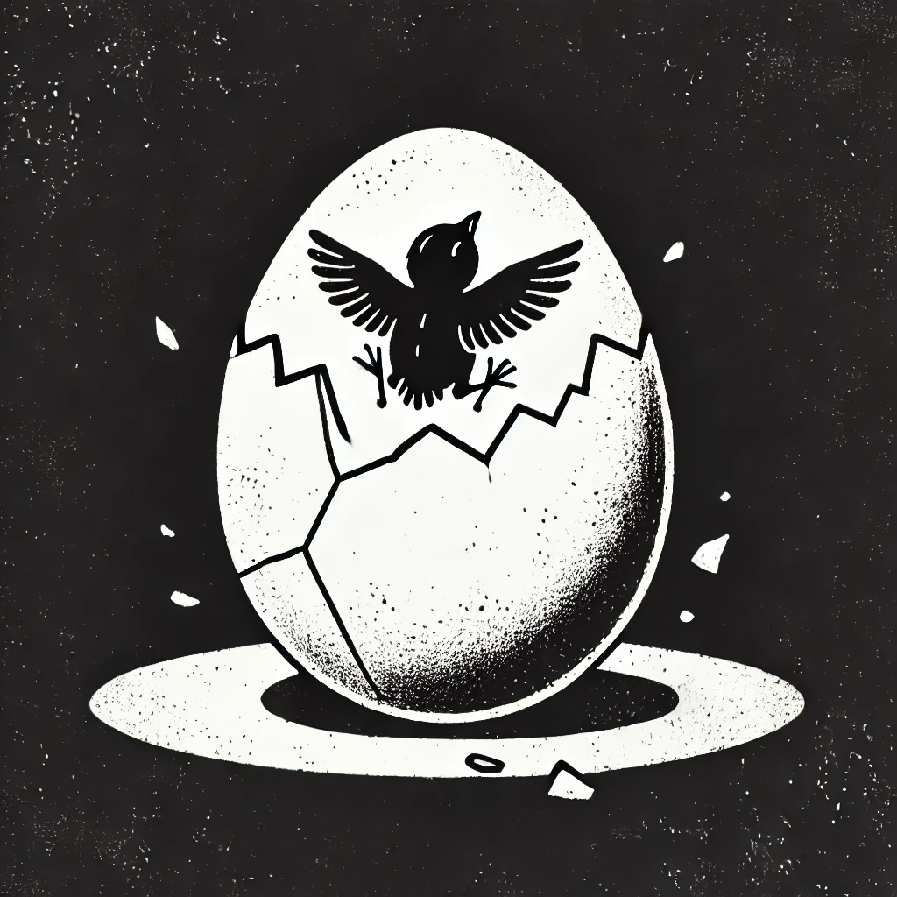

작가
헤르만 헤세
출판일
1919년
감상평에 대한 AI그림
새는 알에서 나오려고 투쟁한다. 알은 세계다. 이 책에서 나오는 문장이다. 아직은 어리다고 생각하지만 느끼는 점은 세상은 넓다는 것이다. 과연 난 치열하게 투쟁을 하고있을까? 또 나는 알에서 빠져나온걸까? 나의 대답은 아니다 나는 아직 부족하고 성장해야한다고 생각한다. 나는 내가 진정한 의미에서의 알에서 나오기위해 노력해야한다고 이 책을 읽으며 생각했다.

감상평에 대한 AI평가
~~~~AI평가~~~~~
✨ 성장에 대한 갈망 – 글쓴이는 아직 부족하다고 느끼지만, 더 나아지고 싶다는 강한 의지를 가지고 있습니다.
✨ 자기 성찰 – 현재 자신의 위치를 돌아보며 스스로에게 질문을 던지고 있습니다.
✨ 겸손함 – 아직 완전히 성장하지 않았다고 인정하며, 배움과 노력이 필요함을 스스로 받아들이고 있습니다.
✨ 결단력 – 단순히 고민하는 것이 아니라, 앞으로 나아가기 위해 노력해야겠다는 다짐이 담겨 있습니다.